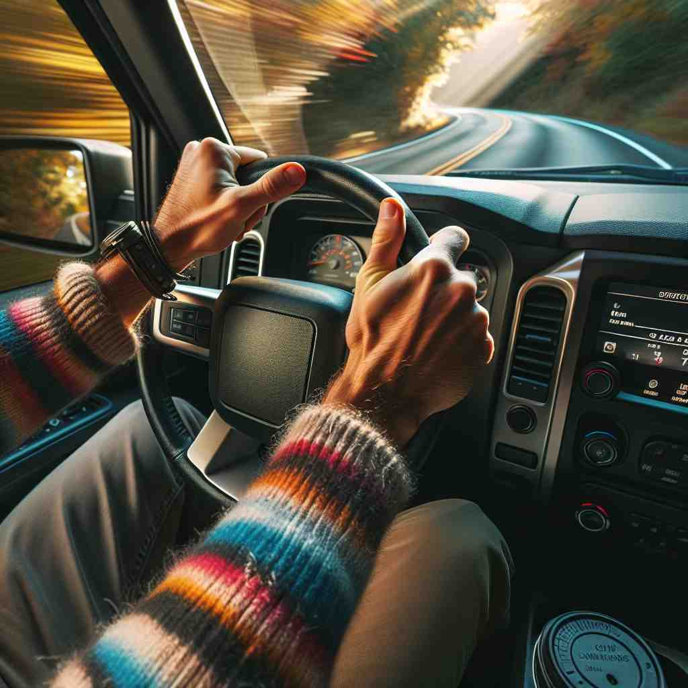

💬 The driver needs to turn the wheel to follow the road. 司机需要转动方向盘以跟随道路。

💬 The dancer loves to turn in a circle during her performance. 舞者在表演时喜欢旋转。
💬 The driver needs to turn the wheel to follow the road. 司机需要转动方向盘以跟随道路。
💬 The dancer loves to turn in a circle during her performance. 舞者在表演时喜欢旋转。
🔈 [tɜːn]
💬 Turn the doorknob to open the door. 转动门把手来开门。
🔍 转动: 就像你拧瓶盖一样，用手抓住门把手，向左或者向右旋转它，门就能打开了。
💬 The leaves turn brown in the fall. 树叶在秋天变成棕色。
🔍 变成: 就像你把白色的纸涂成红色一样，树叶从绿色变成了棕色。它们换了一种颜色。
💬 It's my turn to play the game. 轮到我玩游戏了。
🔍 轮流: 就像你和朋友轮流玩滑梯一样，现在该你玩游戏了。其他人需要等一会儿。
💬 Turn the page to read the next chapter. 翻页来读下一章。
🔍 翻转: 就像你翻开一本书的下一页一样，把当前的页面翻过去，就能看到新的内容了。
💬 The car turned left at the corner. 汽车在拐角处左转。
🔍 转向: 就像玩具车换一个方向行驶一样，汽车改变了它前进的方向，从直行变成了向左行驶。
🧠 “turn” 的核心意思是改变状态、方向或位置。这可以指旋转一个物体（例如转动门把手），改变颜色或性质（例如树叶变黄），轮流做某事（例如轮到我玩游戏），翻页或者改变方向（例如汽车转弯）。
⬅️ rotate (旋转), change (改变), shift (转变), revolve (旋转)
🔀 stay (保持), remain (保持), straighten (拉直), continue (继续)
🌳 主要词根为 'turn'，表示 '转动、改变方向'，是一个基础动词，用于描述物体或人的旋转或方向变化。
💡 记住 'turn' 的时候，可以联想实体物体如旋转的门把手。通过想到物体的旋转动作，可以更直观地理解它的含义并记住该单词。
🗝️ v. to change direction or position 改变方向或位置
🎭 在一个繁忙的十字路口，一辆汽车慢慢驶向路口，然后平稳地左转，进入另一条街道。司机小心转动方向盘，展示了 'turn' 作为改变方向或位置的含义。
💬 Turn left at the next intersection. 在下一个交叉口左转。
🤔 从圆周运动延伸到改变方向
🗝️ v. to change or transform into something else 改变或转变为其他事物
🎭 在一个实验室中，科学家将无色溶液滴入烧杯，溶液逐渐变成鲜艳的粉红色。这场化学反应生动地展示了 'turn' 作为转变或转化为另一物的含义。
💬 The leaves turn brown in autumn. 秋天，叶子变成棕色。
🤔 从物理转动延伸到状态的转变
🗝️ v. to reach a certain age or stage 达到某个年龄或阶段
🎭 在一个热闹的生日派对上，小女孩兴奋地吹灭蜡烛，周围的人齐声欢呼：'祝你九岁生日快乐！'这个场景展示了 'turn' 作为达到某个年龄或阶段的含义。
💬 She turns 30 next month. 她下个月就30岁了。
🤔 时间的流转带来年龄或阶段的变化
🗝️ n. a chance or opportunity to do something 可以做某事的机会或时机
🎭 在一个家庭游戏之夜，每个人依次轮流掷骰子。小男孩满怀期待地说：'现在轮到我了！'这个场景展示了 'turn' 作为做某事的机会或时机的含义。
💬 It's your turn to wash the dishes. 该你洗碗了。
🤔 轮流机会如同圆周运动中的一个点
🗝️ n. a change in direction or position 方向或位置的改变
🎭 在一个竞赛中，骑着自行车的选手在赛道上转弯。他们精准地控制着车辆，轻松地完成了弯道，展示了 'turn' 作为方向或位置变化的含义。
💬 The road makes a sharp turn to the right. 道路急剧向右转。
🤔 从动词转为名词，表示方向的改变
🗝️ v. to switch on or off (a device) 打开或关闭（设备）
🎭 在一个温馨的客厅里，孩子们聚集在一起观看他们最喜爱的动画片。妈妈走到电视前，轻轻地按下按钮打开电视，展示了 'turn' 表示打开或关闭设备的含义。
💬 Please turn off the lights when you leave. 离开时请关掉灯。
🤔 从物理旋转延伸到开关的转动